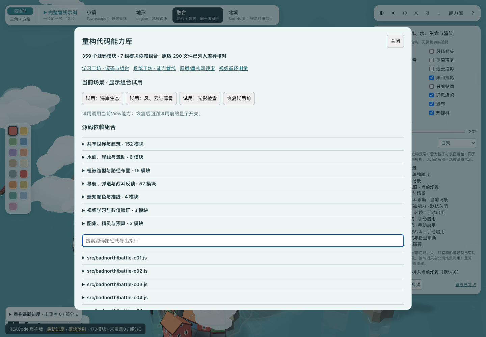
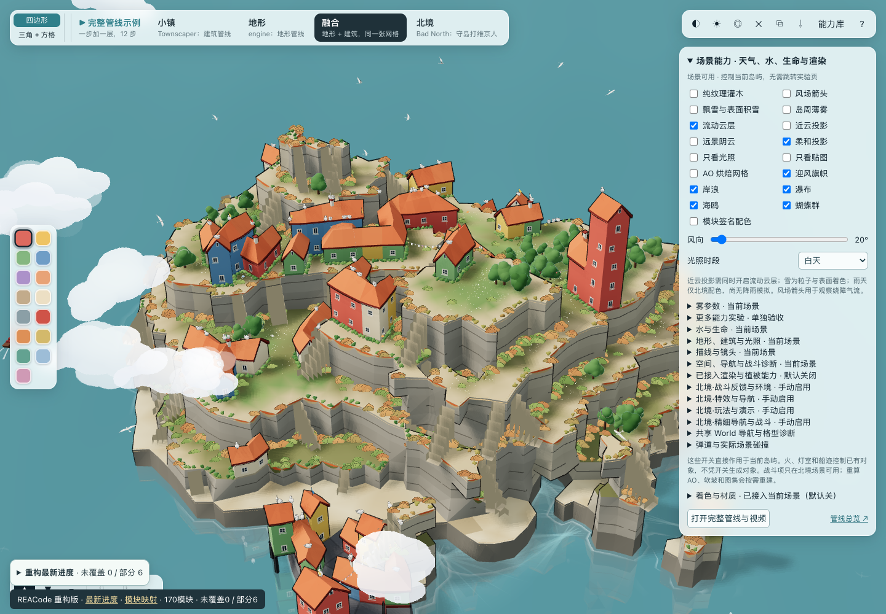
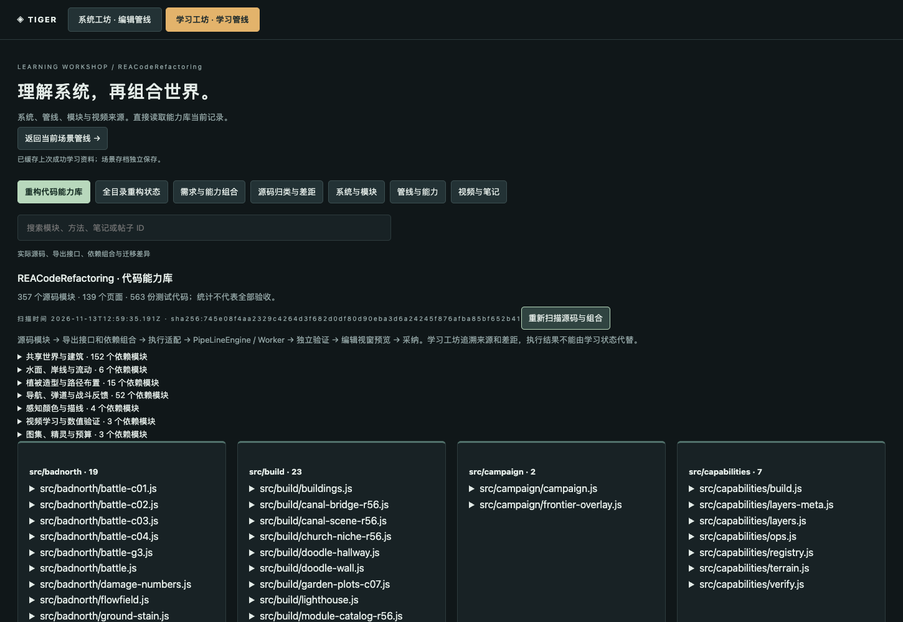
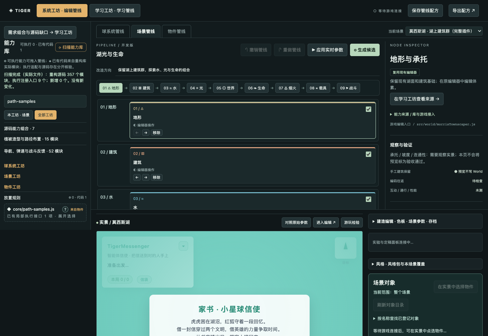
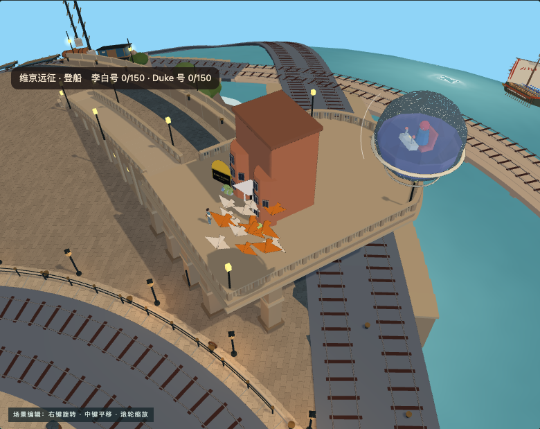
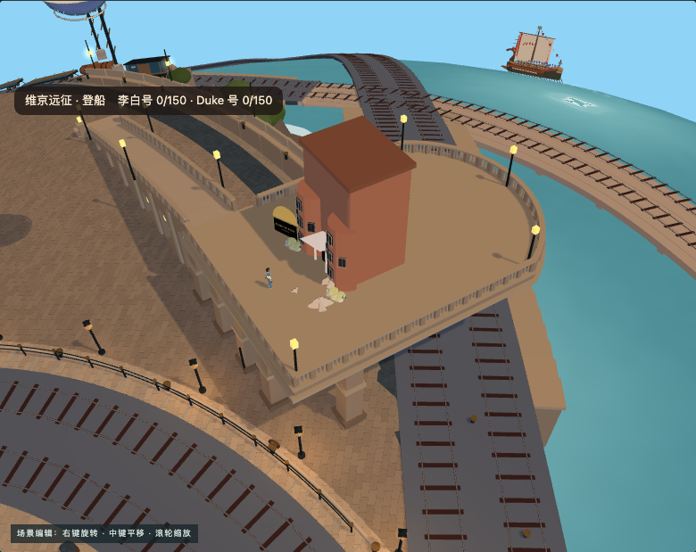
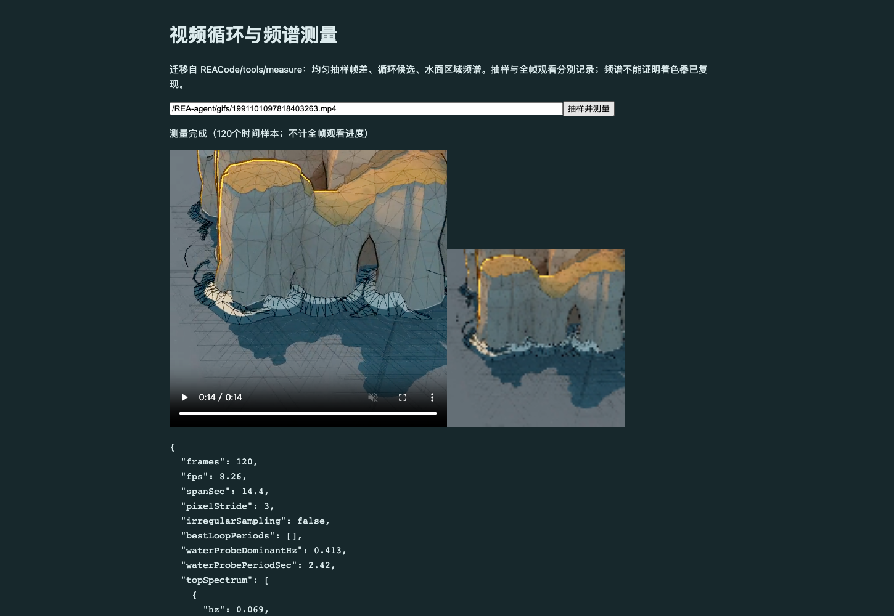

359个源码模块、7组依赖组合；9个体素执行注册入口只是子集。原版290文件逐项列出候选与剩余差距，仍有10个文件未关联落点，不声称全部完成。
右上角能力库：实际模块/导出搜索、组合、双工坊与验证工具入口。三组当前View显示组合试用/恢复；完整World编码与显示开关全部恢复，errors=[]。窗口不是整个源库的Worker适配完成证明。




学习工坊的感知组合→已适配部分→场景管线→PipeLineEngine真实Worker→25种材质改变→对照/放弃全部恢复，未写用户存档。场景有动态船只与人物，两图不作为逐像素差分。


原版measure.html/measure.mjs拆成纯分析、解码采样、Worker和共享页面/CLI；原版compare.html拆成比较目录和页面消费者。保留原件，只向重构库写实现。

岸浪片120个均匀时间样本；无循环极小值，不把探针DFT峰称为已证实浪周期。另实际查看既有联系表0–3秒100帧，不新增全帧观看计数。
首次目录刷新竞态已修；第二轮脚本误以现有快照模块当扫描完成，改验实际页面来源状态。正式书店镇首次脚本重复匹配隐藏侧栏，次次未进入编辑时抓到纯水画面；保留失败，最终按正常进入编辑流程实测成功，未放宽画面门槛。命名导出缺失需核对改名，候选文件存在不能当行为等价。